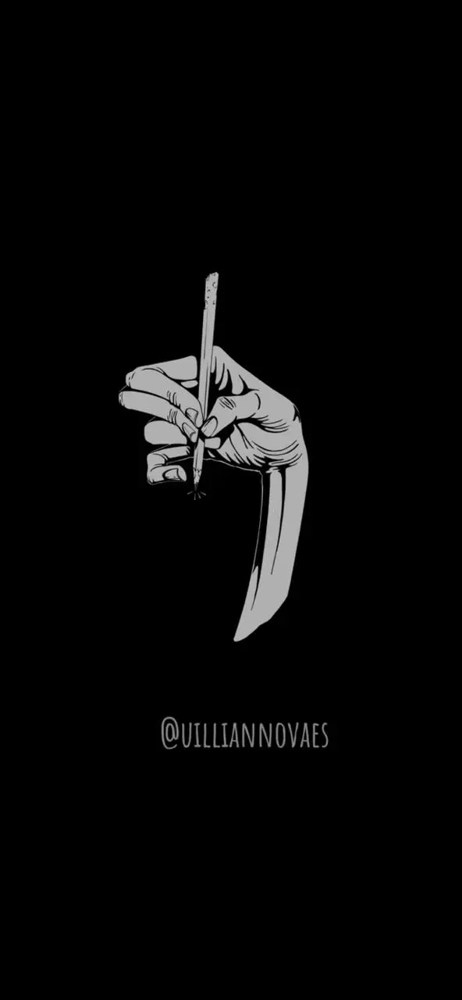
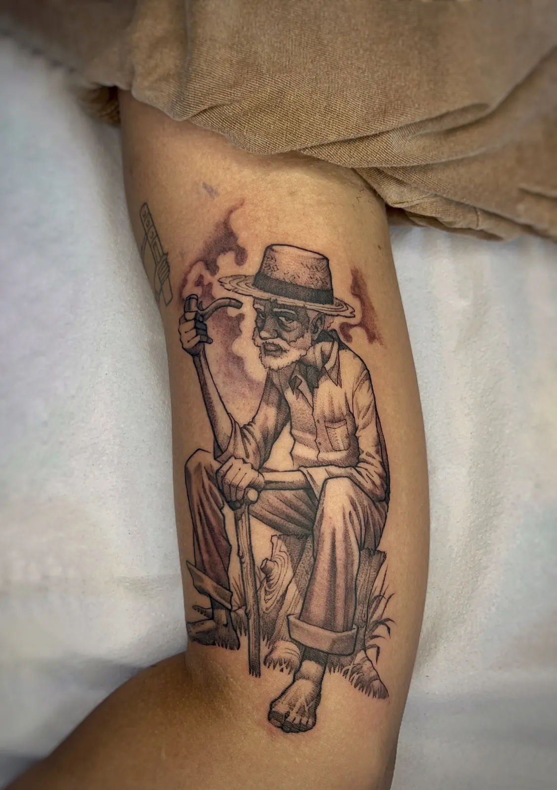
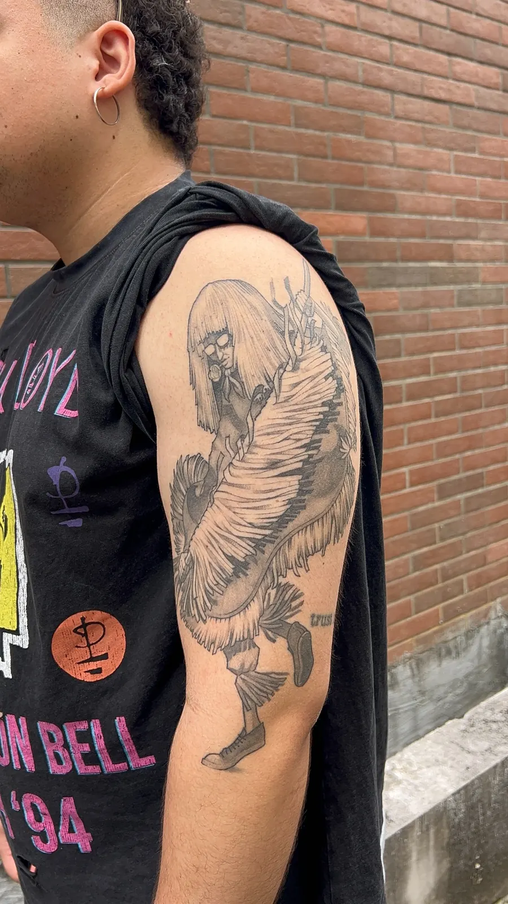
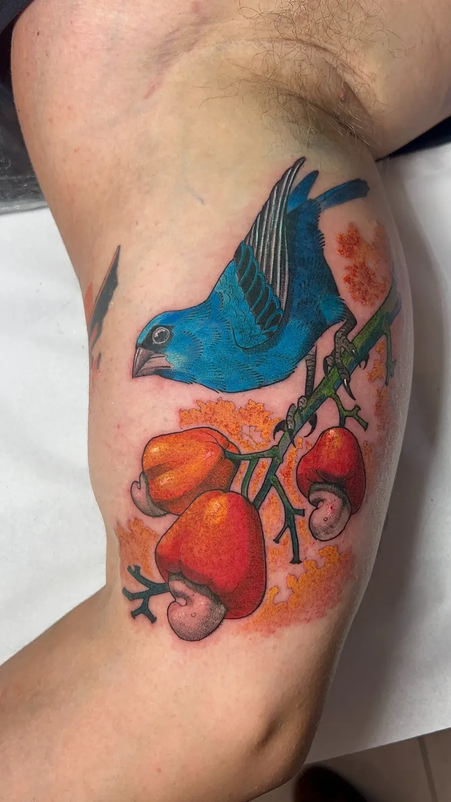
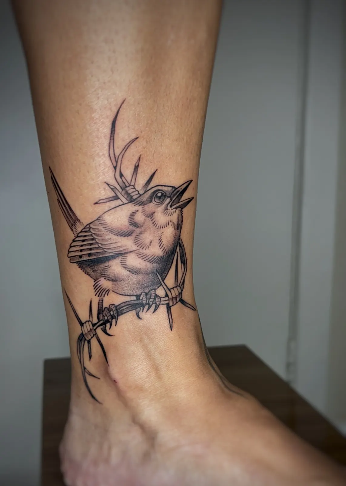
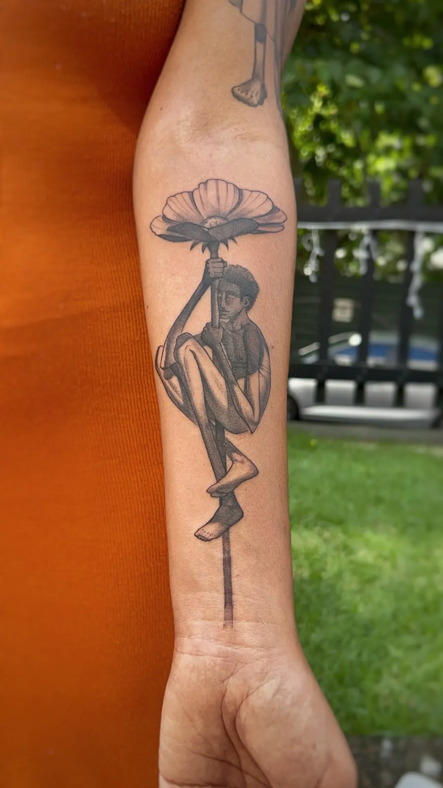
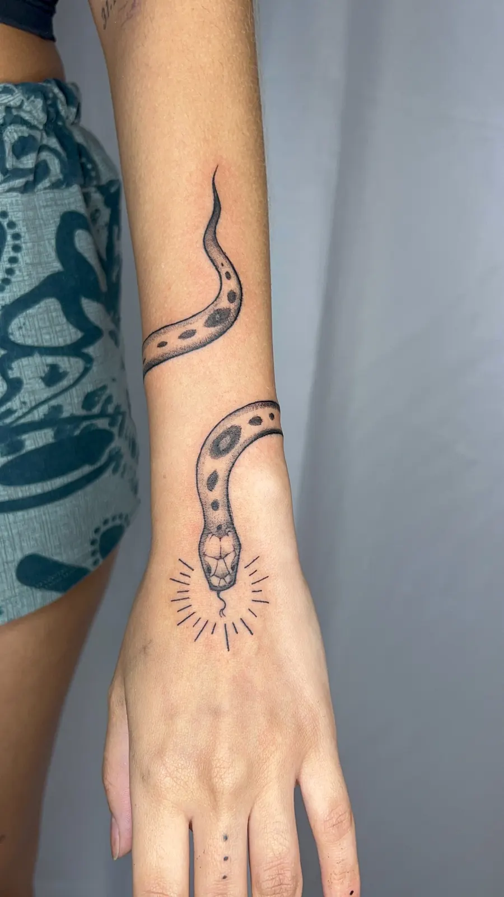
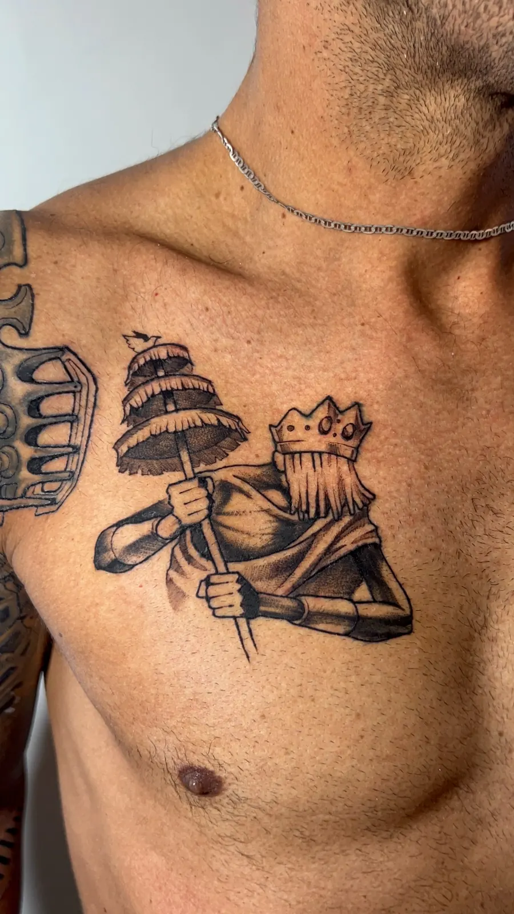

Conversa
O projeto começa entendendo sua ideia, referências e o motivo por trás da tatuagem.

Tatuagem autoral • Salvador-BA
Projetos personalizados, narrativos e criados do zero para transformar memória, cultura e identidade em tatuagem.

O trabalho de Uillian Novaes parte de uma conversa: o que a pessoa carrega, o que quer lembrar e qual história deseja transformar em imagem.
A estética mistura referências culturais, natureza, música, cinema, arte popular e símbolos pessoais em uma linguagem autoral, sutil e convidativa.
portfólio selecionado






como funciona
O projeto começa entendendo sua ideia, referências e o motivo por trás da tatuagem.
O desenho é desenvolvido com base na sua história e na linguagem visual do artista.
A tatuagem ganha forma com atenção ao detalhe, composição e acabamento.
“Uma boa tatuagem não precisa explicar tudo. Ela precisa fazer sentido para quem carrega.”
agendamento
Chame no WhatsApp para conversar sobre o projeto, tirar dúvidas e verificar disponibilidade na agenda.
Chamar no WhatsApp